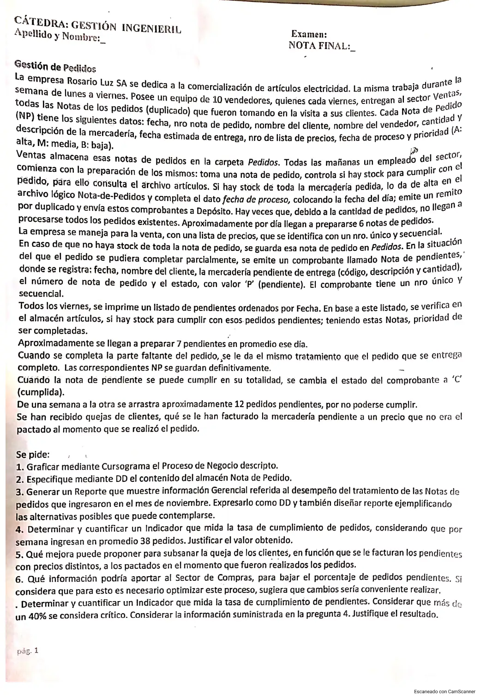

Final, 28/06/2023
Final, 28/06/2023
Enunciado


Propuesta de respuesta
Respuesta no verificada. La propuso Luta Studios con inteligencia artificial y ningún docente la revisó. Puede tener errores.
1. Cursograma
Una columna por sector, con los símbolos del resumen de un alumno que usa la materia. Los almacenes lógicos van a la derecha con flecha punteada, que apunta al almacén si lo actualiza y a la operación si lo consulta. El número chico de cada documento es el ejemplar, 0 el original y 1 el duplicado. El conector A une el tratamiento de los pendientes cumplidos con el del pedido completo. Tocá el dibujo para verlo en pantalla completa.
2. DD del almacén Nota de Pedido
Nota_de_Pedido = nro_NP + fecha + nombre_cliente + nombre_vendedor
+ articulos(e) + fecha_estimada_entrega
+ nro_lista_precios + (fecha_proceso) + prioridad(d)
articulos(e) = cod_articulo + descripcion + cantidad
prioridad(d) = <A | M | B>articulos(e) se repite por cada artículo pedido. La fecha de proceso va entre paréntesis porque se completa recién cuando se prepara el pedido. Son los datos que la narrativa le da a la NP.
3. Reporte del tratamiento de las notas de pedido de noviembre
Reporte_NP = titulo + mes + semana(e) + totales(e)
semana(e) = nro_semana + ingresadas + completas + parciales
+ sin_preparar + pendientes_cumplidos
+ pendientes_arrastrados + porc_preparadas
totales(e) = total_ingresadas + total_completas + total_parciales
+ total_sin_preparar + total_pendientes_cumplidos
+ porc_preparadas_messemana(e) se repite por cada semana de noviembre, en orden. Las columnas son las alternativas que puede tener una nota, completa con su remito, parcial con su nota de pendientes, o sin preparar porque no hubo stock o no se llegó.
Reporte de tratamiento de notas de pedido. Noviembre
| Semana | Ingresadas | Completas | Parciales | Sin preparar | Pendientes cumplidos | Pendientes arrastrados | % preparadas |
|---|---|---|---|---|---|---|---|
| 1 | 38 | 23 | 7 | 8 | 7 | 12 | 78.9 % |
| 2 | 40 | 24 | 6 | 10 | 6 | 13 | 75.0 % |
| 3 | 36 | 22 | 8 | 6 | 8 | 11 | 83.3 % |
| 4 | 38 | 21 | 9 | 8 | 7 | 12 | 78.9 % |
| Total | 152 | 90 | 30 | 32 | 28 | 12 al cierre | 78.9 % |
Los valores son de ejemplo, armados con los promedios de la narrativa. El porcentaje es completas más parciales sobre ingresadas. Le sirve a la gerencia para ver cuántas notas quedan sin preparar cada semana y si los pendientes se acumulan.
4. Tasa de cumplimiento de pedidos
Entran 38 pedidos por semana y se preparan unos 6 por día, de lunes a viernes.
Cerca de 8 de cada 38 pedidos no se preparan en la semana en que entran. Coincide con lo que dice la narrativa, que a veces no llegan a procesarse todos. Esos 8 se suman a la carpeta de la semana siguiente.
5. Mejora para la queja por los precios
La nota de pedido trae el número de lista de precios, pero la nota de pendientes no. Guarda fecha, cliente, mercadería, número de NP y estado. Cuando lo pendiente se completa, a veces semanas después, se factura con la lista vigente.
La mejora es sumar nro_lista_precios a la nota de pendientes, o el precio pactado de cada artículo, y conservar las listas viejas en el almacén. Así lo pendiente se factura con la lista del día en que se tomó el pedido.
6. Información para Compras y cambios al proceso
Desde las notas de pendientes en estado P, un listado semanal para Compras con código y descripción del artículo, cantidad pendiente total, cantidad de notas afectadas, la fecha de la más vieja y la prioridad (A, M o B). Los artículos que se repiten en los 12 pedidos que se arrastran cada semana son los que necesitan un punto de pedido, que el resumen arma como stock mínimo más un margen de seguridad.
Cambios al proceso.
- Mandarle ese listado a Compras el mismo viernes, ordenado por prioridad.
- Revisar los pendientes todos los días y no solo el viernes.
- Que el vendedor consulte el stock al tomar el pedido, para dar una fecha estimada real.
- Preparar las notas por prioridad y no solo por orden de llegada.
7. Tasa de cumplimiento de pendientes
Cada viernes se preparan unos 7 pendientes y se arrastran 12, así que el listado tiene unos 19.
El 40 % crítico solo tiene sentido sobre lo que queda sin cumplir.
Casi dos de cada tres pendientes pasan a la semana siguiente, más del 40 %, y es crítico. Con los 38 pedidos semanales de la consigna 4, el listado de 19 pendientes es la mitad de lo que entra en una semana, también arriba del 40 %. El problema es de stock, y por eso pesa la consigna 6.
Respuesta no verificada. Puede tener errores.
Se armó con la página del parcial, secciones Cursograma, Diccionario de datos, Reportes, Indicadores de gestión y Fallas y mejoras, y el punto de pedido de las normas de compras.
Quedó en duda: «Notas de los pedidos (duplicado)» se lee como que el vendedor entrega el duplicado y el original queda en el cliente. La narrativa no dice dónde se registran las notas de pendientes para imprimir el listado, así que se agrega un almacén lógico Pendientes. Tampoco dice dónde queda la nota de pedido mientras tiene algo pendiente. La última consigna no tiene número, mide un cumplimiento y toma como crítico más del 40 %, así que se calcula el cumplimiento y su complemento. Los valores del reporte de noviembre son de ejemplo.
¿Cómo te fue?
Marcá cada tema del examen.
- CursogramaCursograma, en Parcial de aprobación directa
- DDCómo viene el examen, en Parcial de aprobación directa
- IndicadoresIndicadores de gestión, en Parcial de aprobación directa
- ReportesReportes, en Parcial de aprobación directa
- MejorasFallas y mejoras, en Parcial de aprobación directa